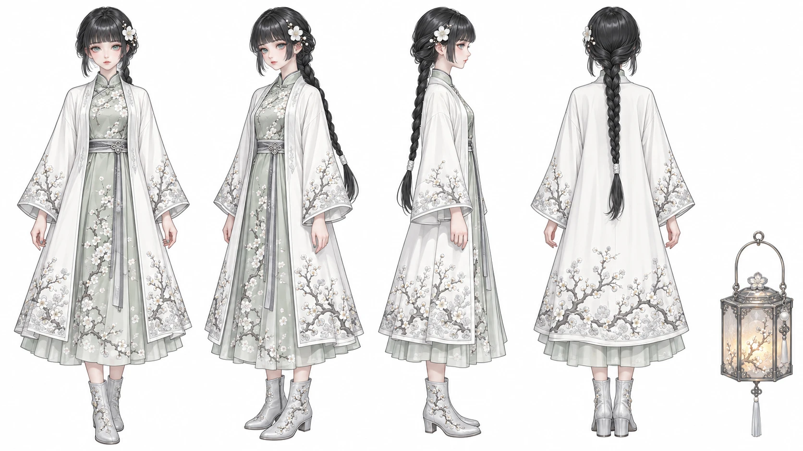
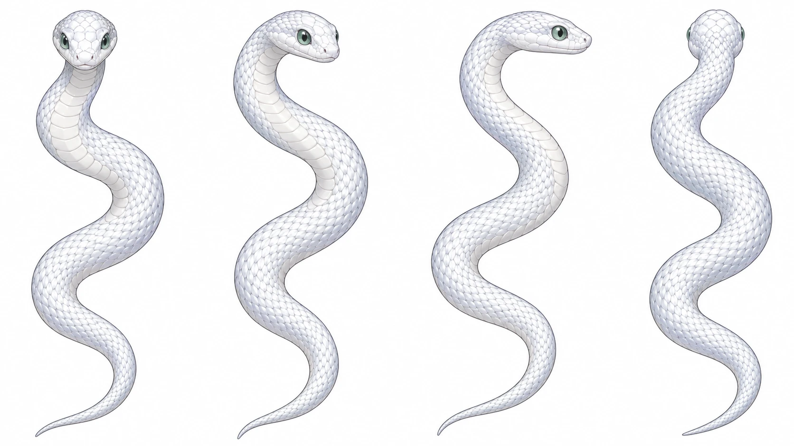
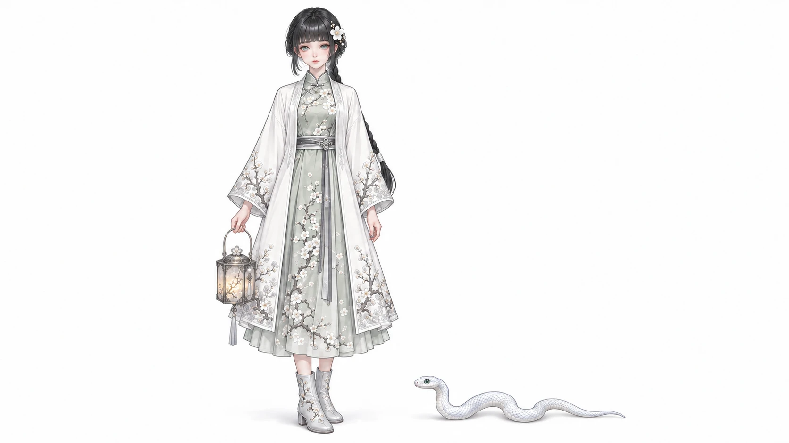
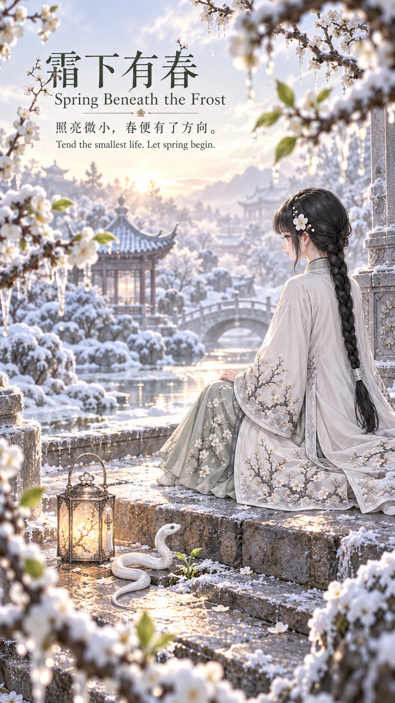
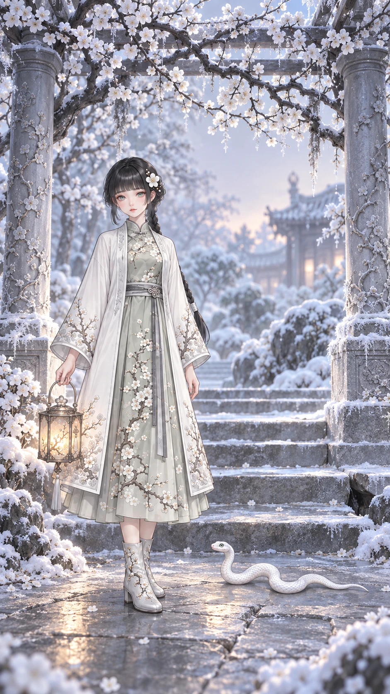
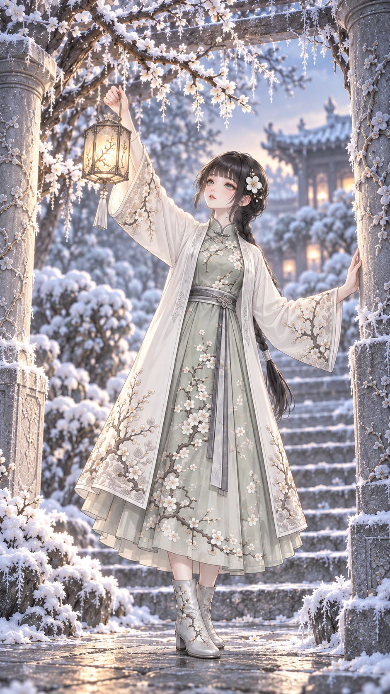
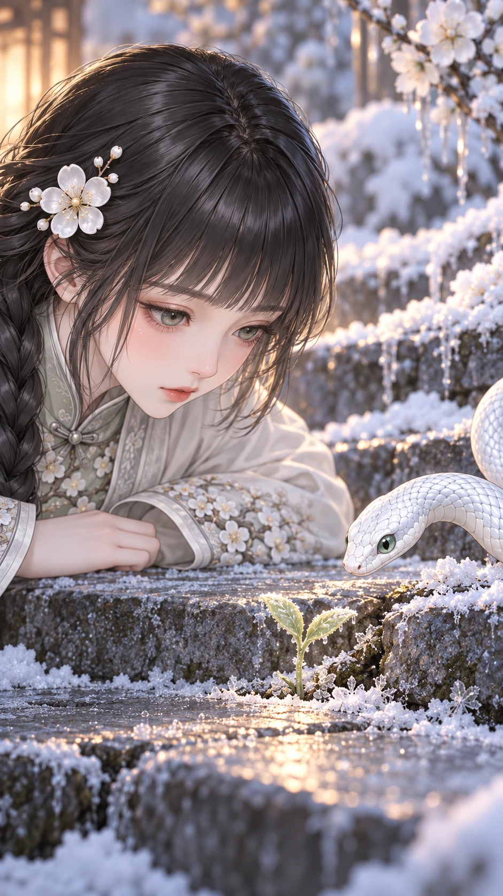
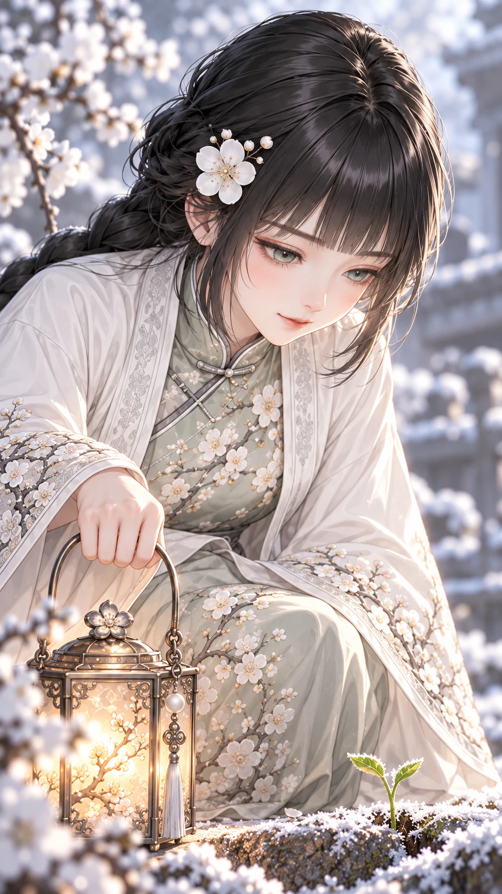
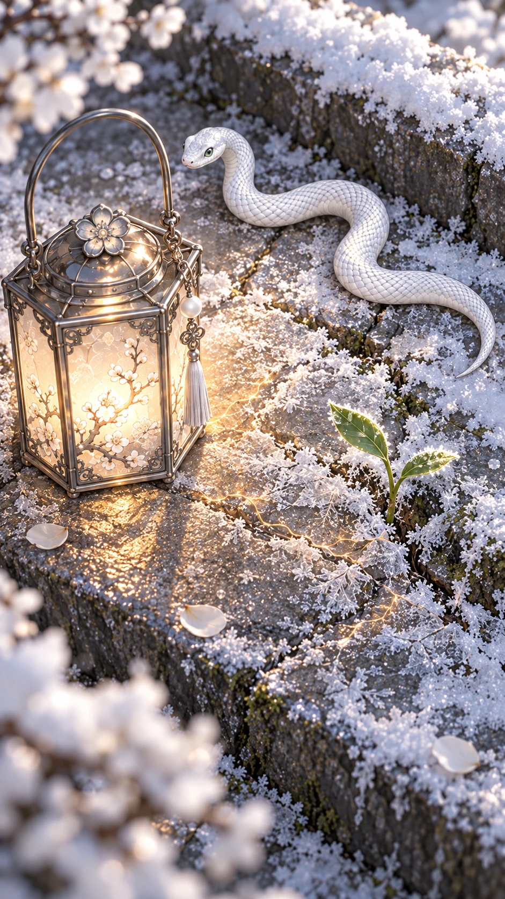
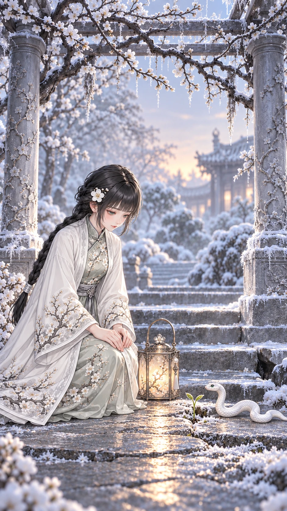

03 · S03 冷白細密裝飾幻想
霜下有春
▶ 觀看 YouTube 作品 ↗Spring Beneath the Frost
照亮微小，春便有了方向。
Tend the smallest life. Let spring begin.
60 秒＝片頭 5 秒＋10 鏡各 5 秒＋片尾 5 秒。共 15 張定稿圖片，點擊可查看原圖。影片部分交付 12 組雙語生成提示詞。
完整製作規格 · 中文字幕 · English captions
角色設定與共同體型


單一低辮、白梅髮夾、瓷白細繡衣裙；另附暖燈


冷白細鱗、淡綠眼，一頭、一身、一尾


同地面同景深：小蛇在靴旁，暖燈由右手低提
獨立片頭與片尾
兩張海報分別為前導與後記，採用獨立鏡位、姿態及時刻，已與全部十鏡目視對照。

霜門之外，走入庭園；背影入園，與01花架下正面站姿不同


解凍花枝後，石階小憩；側後高階坐姿，與10低處跪坐不同
十張正片分鏡


5–10 秒 · 霜把整座花園留住 / Frost holds the garden still.


10–15 秒 · 我想把光送往高處 / I lift the light toward the branches.

15–20 秒 · 花卻仍在寒意裡 / The flowers are still asleep.

20–25 秒 · 你卻帶我低下頭 / You lead me to look down.


25–30 秒 · 原來春天這麼小 / Spring begins so small.


30–35 秒 · 小小的你也值得 / You deserve warmth, too.

35–40 秒 · 這盞光先留給你 / This light stays with you.

40–45 秒 · 一點暖讓生命醒來 / A little warmth awakens life.


45–50 秒 · 春從腳邊輕輕走來 / Spring comes softly at our feet.


50–55 秒 · 春天先從你這裡開始 / Spring begins right here with you.
角色圖為橫式16:9構圖，海報／分鏡為直式9:16構圖。原生尺寸含生成工具的取整差異，逐檔尺寸及精確輸出方式見資產清單與完整規格。燈在07後固定留在嫩芽左側平石。